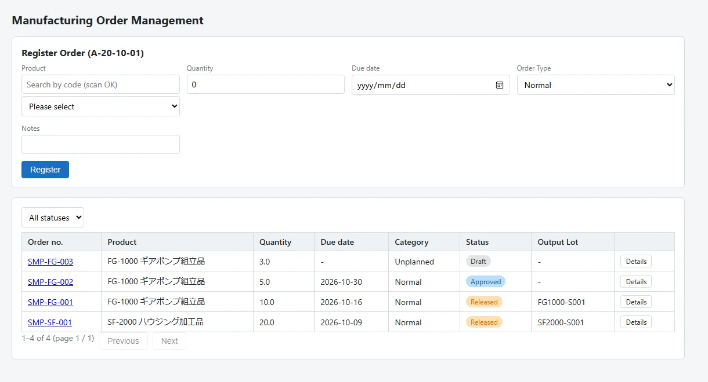
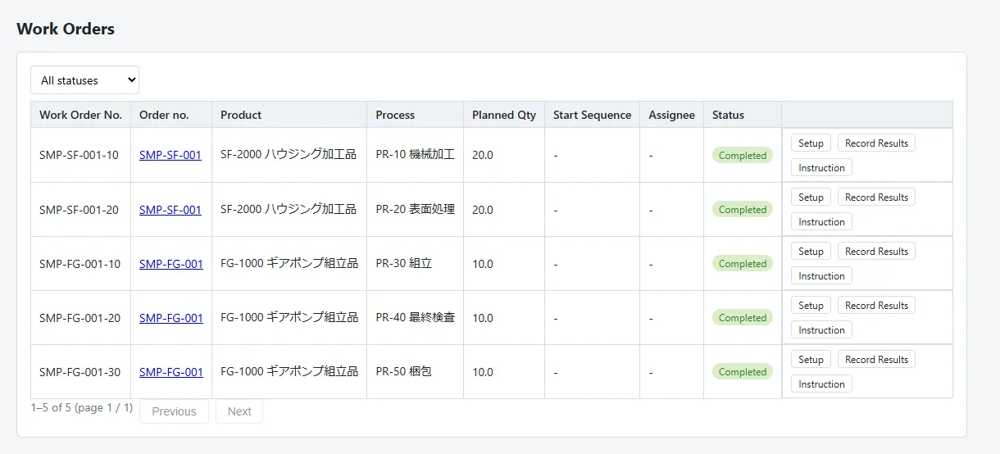

A-20-10-01B-10-20
Register an order, and work orders line up for each process
When you approve a manufacturing order and release it, work orders are created following the routing registered for the product, and the output lot is numbered automatically. Each status has its own color, and no step can be skipped.
Draft→Approved→Released→Completed

